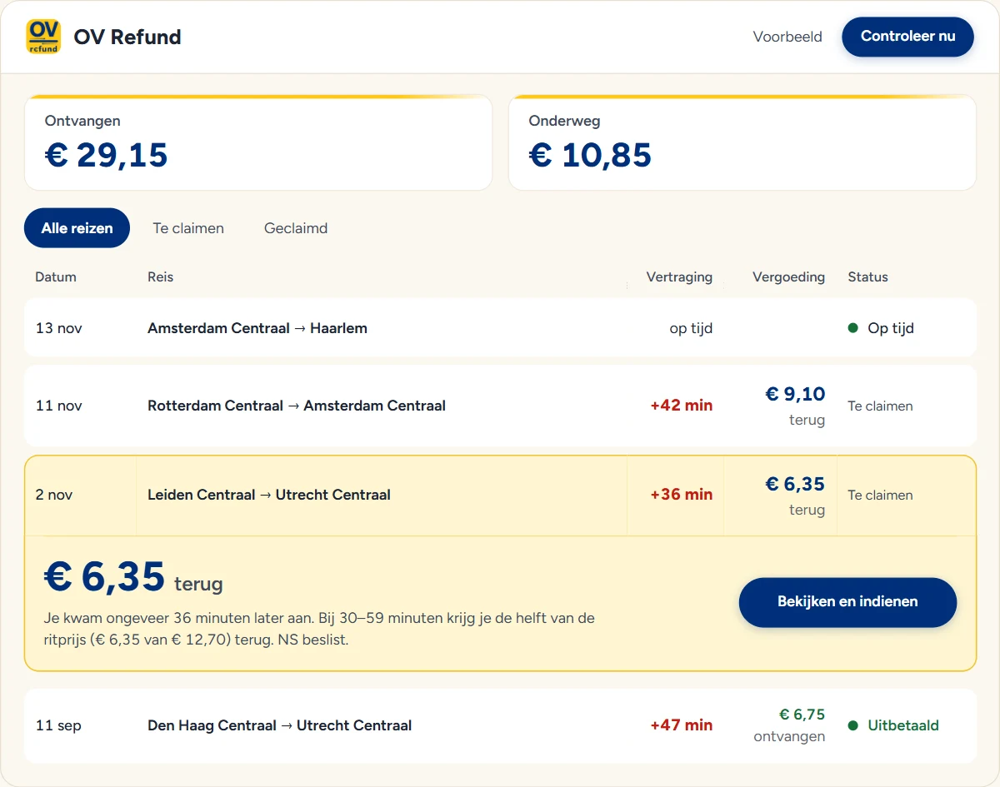
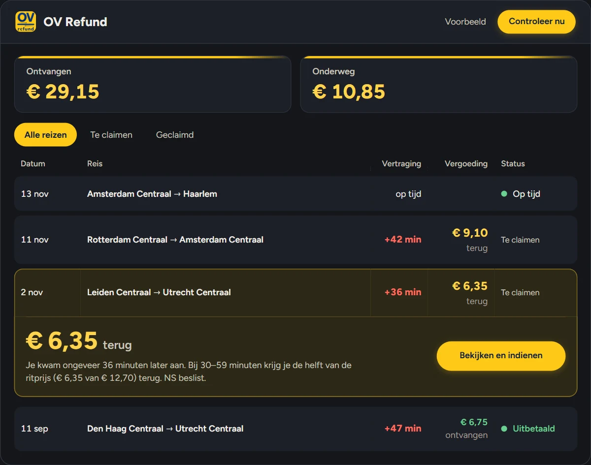
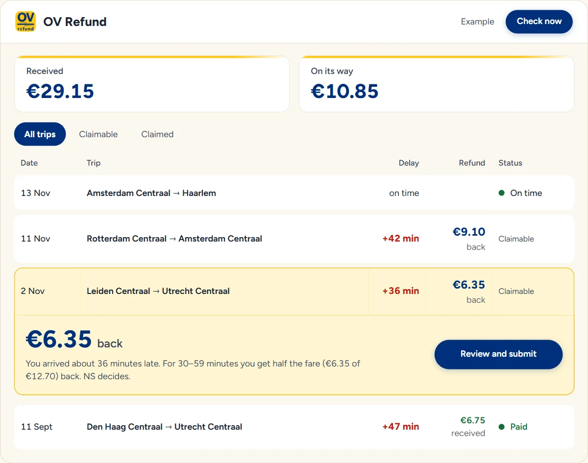
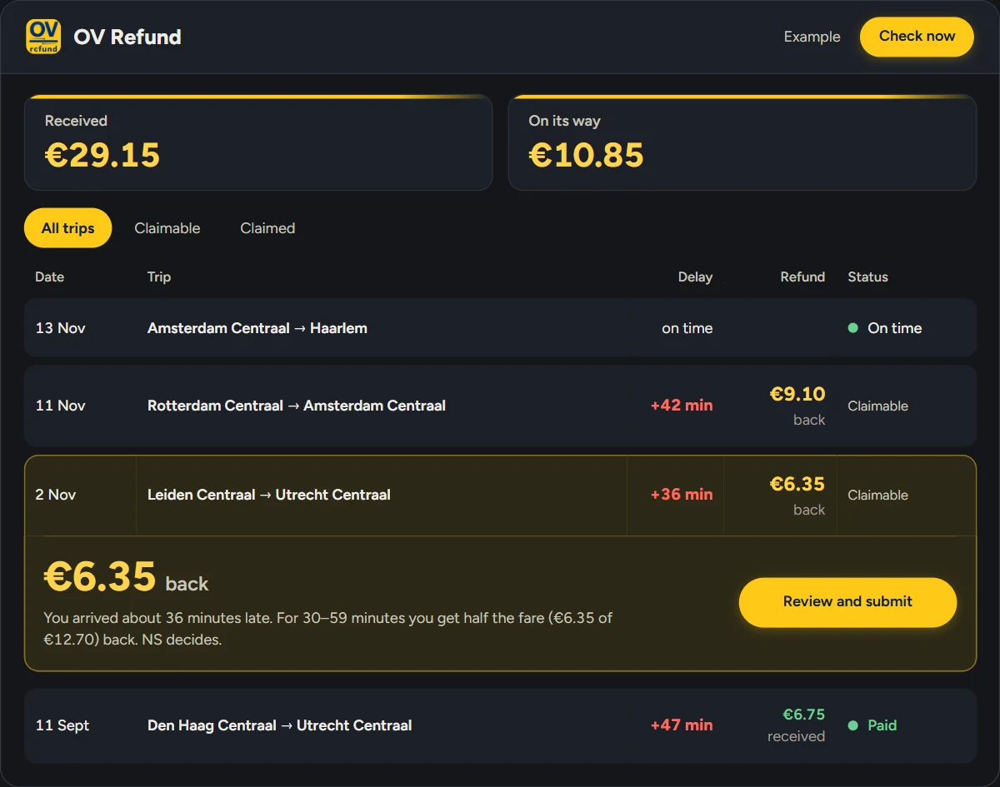

Vertraging gehad?
Geld terugzonder gedoe
Train delayed?
Money backno hassle
OV Refund vindt je vertraagde NS-reizen en helpt je je geld terug te vragen. Je bekijkt en dient in vanuit de app, of je laat het automatisch doen. Gratis, zonder commissie, op je eigen computer.
OV Refund finds your delayed NS trips and helps you claim your money back. Review and submit from the app, or let it submit automatically. Free, no commission, on your own computer.




Drie stappen, daarna houdt OV Refund het voor je bij
Three steps, then OV Refund keeps track for you
Installeer en log in
Install and log in
Log in bij Mijn NS, in het venster van NS zelf.
Log in to Mijn NS in NS's own window.
OV Refund controleert
OV Refund checks
De app vergelijkt elke reis met de echte dienstregeling van die dag.
The app compares every trip with the actual timetable of that day.
Jij vraagt je geld terug
You claim your refund
Je bekijkt en dient in vanuit de app, of je laat het automatisch doen. NS beslist en betaalt rechtstreeks aan jou.
Review and submit from the app, or let it submit automatically. NS decides and pays you directly.
Bekijk de instructies stap voor stap →See the step-by-step instructions →
Waarom OV Refund
Why OV Refund
| OV Refund | Claimdiensten | Claim services | Zelf bij NS | Directly with NS | |||
|---|---|---|---|---|---|---|---|
| Kosten | Cost | Gratis | Free | Vaak een deel van je vergoeding (bijv. 25%) | Often a share of your refund (e.g. 25%) | Gratis | Free |
| Claimt vertragingen automatisch | Claims delays automatically | ✓ | ✓ | — | |||
| Je gegevens | Your data | Alleen op je eigen computer | Only on your own computer | Bij een derde partij | With a third party | NS | |
| Uitbetaling | Payout | Rechtstreeks van NS | Directly from NS | Via de dienst | Via the service | Rechtstreeks van NS | Directly from NS |
Veilig en privé
Safe and private
Alles op je eigen computer
Everything on your own computer
Je reizen en claims blijven bij jou. Geen account bij ons, geen tracking.
Your trips and claims stay with you. No account with us, no tracking.
Wachtwoorden versleuteld
Passwords encrypted
Windows bewaart ze versleuteld. OV Refund vult je NS-wachtwoord alleen in op de inlogpagina van NS.
Windows stores them encrypted. OV Refund enters your NS password only on NS's own login page.
Jij houdt de controle
You stay in control
Claims gaan op jouw naam naar NS, en NS betaalt direct aan jou. Updates zijn digitaal ondertekend.
Claims go to NS in your name, and NS pays you directly. Updates are digitally signed.